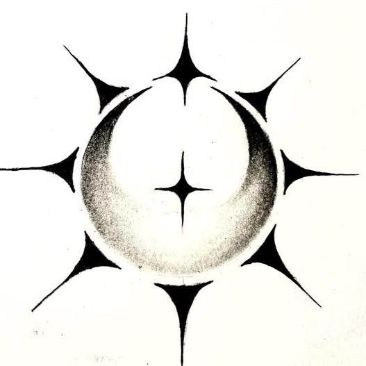
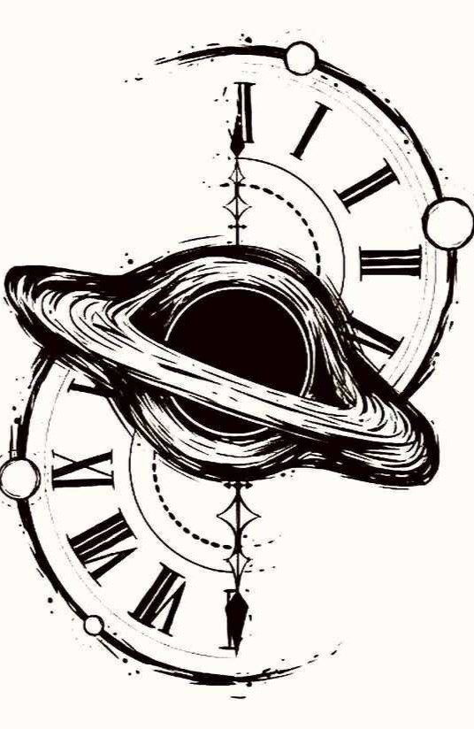
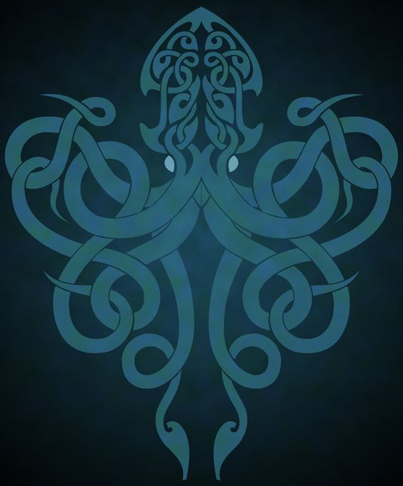
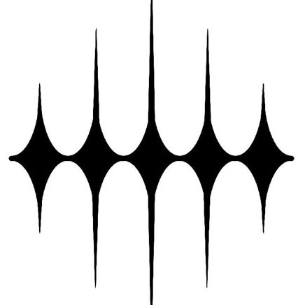
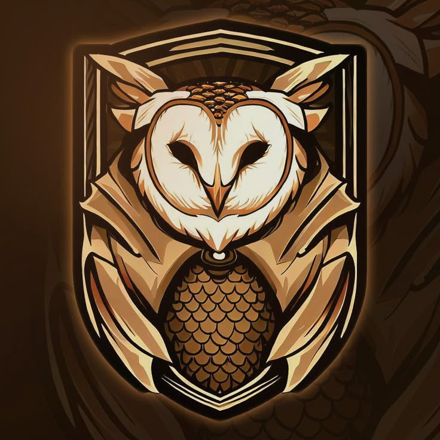
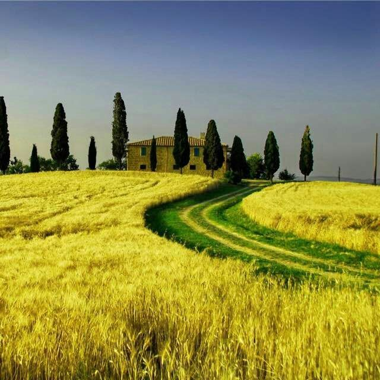
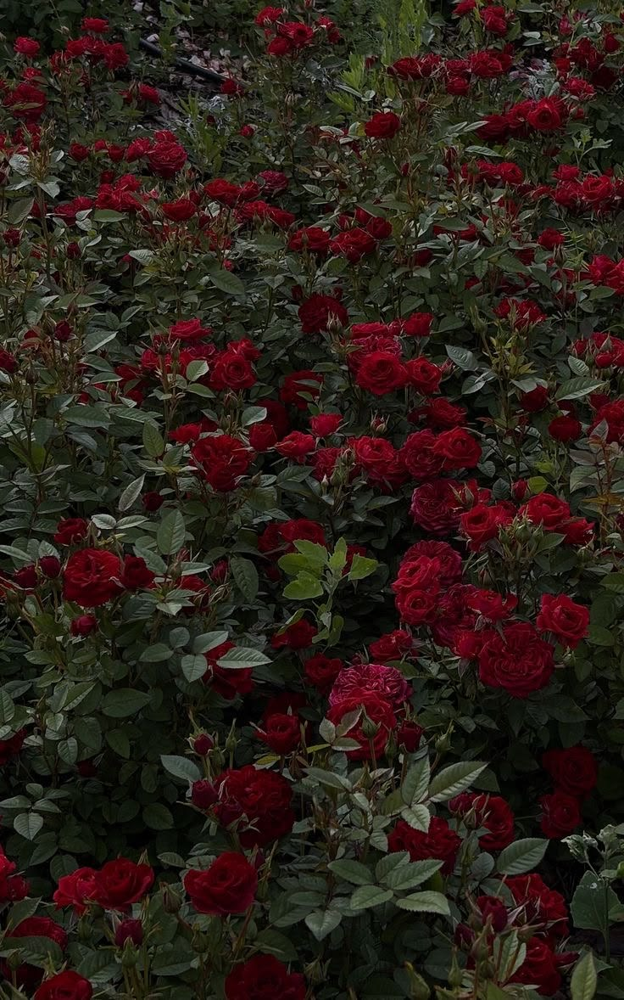

✦ Notícias
Documentações sobre Facções e Organizações
🗂️
Leia "O Massacre nos Céus de Astérias" →
Leia "Revolta nos Templos de Poemia" →
Leia " →
✦ idealistas ✦
Ao longo da história, em meio a derrotas, triunfos e às demandas oriundas desses eventos, os indivíduos que habitam este mundo formaram agrupamentos em busca de um ideal ou de uma crença. A seguir, será possível visualizar alguns deles, acompanhados de suas respectivas informações e documentações disponíveis.
✦ 🗂️

✦ Rasteja pela sombra
Ao perder a batalha contra a Bico de Ferro para governar o Reino Flutuante, da disparidade e do preconceito entre as raças nasce esse desejo de ser aquele que retém o poder.

✦ A busca pela verdade
Quando o casamento de Daila Polar e August Lenuel a ideia de que eles seriam uma reencarnação do sol e da lua tomou muita força, assim surgindo conspirações: se existisse uma divindade ligada à lua por nascença?

✦ Oráculos de Mond
A Estrela Cadente Melia Polar foi uma devota de Mond, tendo um contato muito íntimo com a deusa da sorte. Foi assim que seu governo foi tão próspero. Com isso em mente, ela criou a organização para atender aqueles que buscam se guiar pelas constelações.

✦ Os donos do Mar Cadentes
Um ano após a morte de Leskie e o surgimento do Parlamento Regencial, ainda muito recente e sem ordem, um grupo de marinheiros se autonomearam como donos do Mar Cadente, que traria fartura e festas para o reino. Bem, atualmente eles agem como uma própria nação.

✦ A quinta besta somos nós
Estabelecido alguns anos após a constituição do Reino da Chama Eterna, enquanto o corpo de Blae transformava-se em abrigo e fonte de diversas criaturas, Ícaro Velvet assumiu a direção para que as duas dimensões jamais se conectassem, ou, ao menos, que as repercussões não fossem tão drásticas.
✦ Notícias
✦ arte


